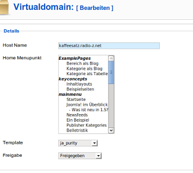
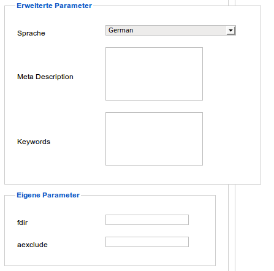
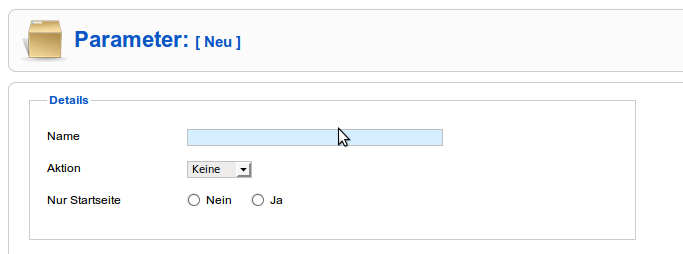

Virtual Domains Hilfe
Inhalt
Einführung
Die Idee von Virtual Domains ist es, zwei oder mehr Websites mit unterschiedlichem Design zu haben, deren Inhalt und Funktionalität sich teilweise unterscheidet, ohne jedoch gleichbleibende Inhalte mehrfach verwalten zu müssen.
Dies lässt sich mit Joomla in Kombination mit Virtual Domains bewerkstelligen, indem man jeder Website/Domain ein eigenes Template zuweist und definiert, welcher Menupunkt als Startpunkt dienen soll.
Beispiel
1. Domain main.domain.tld startet mit dem Menupunkt "Startseite" und erhält das Template ja_purity. (Sagen wir "Startseite" sei Teil des Menus "firstmenu").
2. Domain second.domain.tld startet mit dem Menupunkt "News" und erhält das Template beez. (Sagen wir "News" sei Menupunkt, der die Blogansicht der Kategorie "Aktuelles/News" anzeigt und sei Teil des Menus "secondmenu").
3. Beide Domains sollen das Menu "Company" anzeigen. (Sagen wir, Company enthält verschiedene Links auf Wissenswertes über unsere Firma).
Vorgehen
- Legen Sie die oben geforderten Menupunkte an.
- Definieren Sie im Template 'ja_purity' in der Datei "templateDetails.xml" in der Sektion "positions" eine Position 'first', im Template 'beez' eine Position 'second' und in beiden Templates eine Position 'company' und stellen Sie sicher, das in der index.php der Templates die Positionen an der richtigen Stelle aufgerufen werden (z.B: <jdoc:include type="modules" name="first" /> )
- Weisen Sie unter Erweiterungen->Module
- das Menu 'firstmenu' der Position 'first'
- das Menu 'secondmenu' der Position 'second'
- das Menu 'Company' der Position 'company'
zu.
- Tragen Sie im Plugin virtualdomains die Domain main.domain.tld als Standarddomain ein.
- Legen Sie in der Komponente second.domain.tld an, weisen sie ihr das Template 'beez' und den Menupunkt "News" als Startmenupunkt zu.
Die beiden Websites haben nun unterschiedliche Designs, je ein eigenständiges Menu mit unterschiedlichen Inhalten und ein gemeinsames Menu mit gleichen Inhalten
Ansicht Virtual Domain
Beschreibung
- Definiere eine Virtuelle Domain, ordne einen Menupunkt zu, der den gewünschten Inhalt für "Home" zur Verfügung stellt und ordne ein Template zu.
- Definiere Sprache (für Joomfish), Meta-Description, Keywords, und ggf. eigene Parameter.
Achtung: Trage nicht die Standard/Hauptdomain ein. Für die Standarddomain gelten die Einstellungen für Template und Startseite von Joomla. Sie muss im Plugin "virtualdomains.php" erfasst werden
Screenshot1

Screenshot2

- Sprache: Wird von Joomfish verwendet
- Meta-Description/Keywords: Für diese Seite in den Metatags ausgeben
- Eigene Parameter: Unter dem Menupunkt "Params" definieren. Eigene Parameter können von Programmierern für domainspezifische Anpassungen verwendet werden.
Ansicht Parameter
Beschreibung
Eigene Parameter können von Programmierern für domainspezifische Anpassungen verwendet werden.
Definieren Sie hier neue Parameter-Schlüssel. Die dazugehörigen Werte können Sie für jede Domain in der jeweiligen Vorlage eintragen. Schlüssel und Werte werden der Variable $_REQUEST oder $_GLOBALS hinzugefügt.
Screenshot

- Name: Schlüssel/Keyword des Parameters
- Aktion:
- Keine:Nicht in den Variablen $_GLOBALS und $_REQUEST ausgeben (z.b., um statt dessen eine Datenbankabfrage zu verwenden)
- Request:In der Variablen $_REQUEST ausgeben
- Globals:In der Variablen $_GLOBALS ausgeben
- Nur Startseite: Den Parameter nur für die Startseite der Domain verwenden.